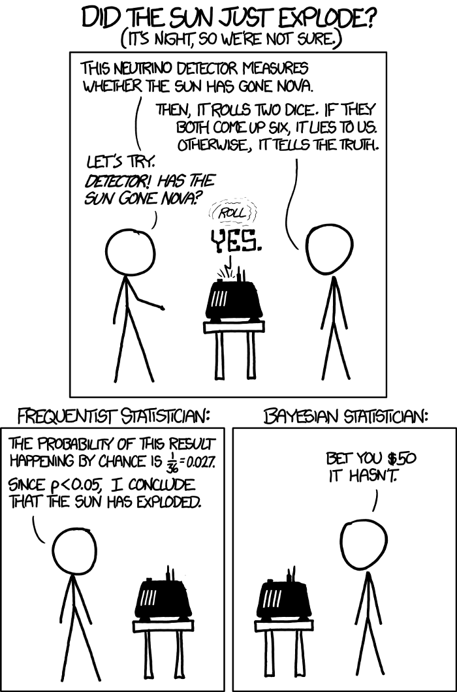
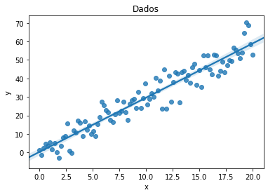

Estimador de Máxima Verossimilhança
Introdução
"Tradicionalmente a inferência estatística sobre a média de uma população se apoia no Teorema Central do Limite para construir Intervalos de Confiança ou testar hipóteses sobre o valor do parâmetro. Esta abordagem da estatística tradicional pode ser extendida para inferências a respeito de qualquer parâmetro, não só a média. Da mesma forma que no caso da média populacional se usa a distribuição t-Student ou a distribuição Normal Padrão, no caso de outros parâmetros se utiliza outras distribuições amostrais. Essas distribuições são chamadas amostrais porque representam o comportamento das estimativas baseado na repetição incontável do processo de amostragem.
Na prática científica, no entanto, sempre se realiza uma única amostragem, o que resulta em uma única amostra. Assim, o conceito de distribuição amostral é até certo ponto artificial, pois em pesquisa científica não raciocinamos em termos de repetições incontáveis de experimentos ou processos de observação. O resultado disto é que o conceito de teste estatístico de hipótese e de intervalo de confiança são frequentemente mal compreendidos.
O desenvolvimento da inferência estatística a partir do conceito de verossimilhança tem sido utilizado como uma alternativa à abordagem estatística frequentista e, segundo alguns autores (como por exemplo Royall, 1997), é mais coerente com a prática científica." (Batista, 2009)

Função Verossimilhança
Quando a função de densidade de probabilidade das observações de uma amostra aleatória é vista como uma função de , chamamos ela de função de verossimilhança.
Estimador de Máxima Verossimilhança (MLE)
Para cada observação , seja um valor de tal que a função de verossimilhnaça seja máxima. Defina o estimador.
É importante observar que o máximo dessa função pode não estar em um ponto de . Nesse caso, MLE não existe. Ele pode não estar unicamente definido, também.
Limitações
- Não existência em todos os casos, isso depende muito da função e do espaço dos parâmetros.
- Não unicidade em todos os casos.
- Não podemos interpretar MLE como o parâmetro mais provável, pois teríamos que ter um espaço de probabilidade associado ao parâmetro, o que não é dado.
Implementação
Como referência, estou utilizando este site.
```python
importando bibliotecas
import numpy as np, pandas as pd from matplotlib import pyplot as plt import seaborn as sns from scipy.optimize import minimize import scipy.stats as stats import pymc3 as pm3 import numdifftools as ndt import statsmodels.api as sm from statsmodels.base.model import GenericLikelihoodModel %matplotlib inline ```
```python
Gerando os dados
N = 100 x = np.linspace(0, 20, N) # gerando lista igualmente espaçada
beta1 = 3 beta0 = 0 sigma = 5 ```
```python error = np.random.normal(0, sigma, size = N) y = beta1*x + beta0 + error
data = pd.DataFrame({'y': y, 'x': x}) data['constant'] = 1
sns.regplot('x','y',data = data) # Essa reta é uma estimativa dos dados feito por seaborn plt.title('Dados') plt.show() ```

Nesse exemplo, o nosso problema será estimar a média. Observe que os dados tem um comportamento linear. Sem nos concentrarmos muito na modelagem e os problemas que ela pode trazer, eu vou já supor que temos um problema de Regressão Linear, onde os dados , onde é a variância do erro no processo, e , isto é, depende de x, nesse caso. Essa é uma dificuldade, as contas ficam mais difíceis e, por isso, vamos usar asrtifícios computacionais. Vamos supor que a variância é conhecida. Além disso, vamos supor que temos uma amostra aleatória
Temos que a verossimilhança é produto das pdfs(distribuição de densidade de probabilidade). Para otimizar podemos, entretanto, obter a soma dos logaritmos das pdfs. E por fim, vamos resolver um problema de minimizar o negativo desse valor. Veja que é equivalente a maximixar a soma!!
```python
Função de verossimilhança. Chamamos de Função de Perda
def MLE(params): # Função Perda: - log-verossimilhança beta0, beta1 = params[0], params[1] # Modelo Linear yhat = beta0 + beta1*x #= mu
#loc é a média e scale desvio padrão. Note que sigma é conhecido
negLikelihood = - np.sum(stats.norm.logpdf(y, loc = yhat, scale = sigma))
return negLikelihood
```
```python
Esse é o chute inicial
initial_guess = np.array([3, 6])
results = minimize(MLE, initial_guess, method='Nelder-Mead', options = {'disp': True}) ```
Optimization terminated successfully.
Current function value: 307.745486
Iterations: 56
Function evaluations: 107
python
print(results)
final_simplex: (array([[-1.03428809, 3.11012856],
[-1.0342294 , 3.110121 ],
[-1.03433677, 3.11012912]]), array([293.95399071, 293.95399071, 293.95399071]))
fun: 293.95399070678394
message: 'Optimization terminated successfully.'
nfev: 103
nit: 55
status: 0
success: True
x: array([-1.03428809, 3.11012856])
python
resultsdf = pd.DataFrame({'coef': results['x']})
resultsdf.index=[r'$\beta_0$',r'$\beta_1$']
np.round(resultsdf.head(2), 4)
| coef | |
|---|---|
| $\beta_0$ | -1.0343 |
| $\beta_1$ | 3.1101 |
Vamos estimar usando a biblioteca OLS. Ela faz esse processo e muito mais internamente.
python
results_ols = sm.OLS(data.y, data[['constant', 'x']]).fit()
results_ols.summary()
| Dep. Variable: | y | R-squared: | 0.941 |
|---|---|---|---|
| Model: | OLS | Adj. R-squared: | 0.941 |
| Method: | Least Squares | F-statistic: | 1568. |
| Date: | Wed, 26 Aug 2020 | Prob (F-statistic): | 4.22e-62 |
| Time: | 21:20:55 | Log-Likelihood: | -293.06 |
| No. Observations: | 100 | AIC: | 590.1 |
| Df Residuals: | 98 | BIC: | 595.3 |
| Df Model: | 1 | ||
| Covariance Type: | nonrobust |
| coef | std err | t | P>|t| | [0.025 | 0.975] | |
|---|---|---|---|---|---|---|
| constant | -1.0343 | 0.909 | -1.138 | 0.258 | -2.839 | 0.770 |
| x | 3.1101 | 0.079 | 39.599 | 0.000 | 2.954 | 3.266 |
| Omnibus: | 1.778 | Durbin-Watson: | 2.306 |
|---|---|---|---|
| Prob(Omnibus): | 0.411 | Jarque-Bera (JB): | 1.423 |
| Skew: | -0.289 | Prob(JB): | 0.491 |
| Kurtosis: | 3.084 | Cond. No. | 23.1 |
Warnings:[1] Standard Errors assume that the covariance matrix of the errors is correctly specified.
Veja que a estimação dos coeficientes foi a mesma! Apesar de ambas estarem erradas p para . Na verdade se olharmos o intervalo de confiança que OLS nos dá, vemos que de fato está nele. Mas ainda não esta na hora de vocês verem isso!
Conclusão
Podemos usar uma função de perda (que no caso será menos a log-verossimilhança) e usar um algoritmo de otimização!
Propriedades
Invariância
Se é o estimador de máxima verossimilhança de e é uma função injetiva, então é o estimador de máxima verossimilhança de . Na verdade, podemos retirar condição de injetividade.
MLE de uma Função
Seja uma função arbitrária do parâmetro e . Para cada , definimos e
Definimos a ML.E.de

Teorema
Seja MLE de e função de . Então uma MLE de é .
Consistência
Suponha que para uma amostra suficientemente grantde, existe um MLE único para . Então, sob algumas condições, a sequência de MLE é uma sequência consistente de estimadores de . A seuqência convergee em probabilidade para o valor desconhecido de .
O mesmo acontece com o Estimador de Bayes, dadas condições de regularidade.
Função Digamma:
Método dos Momentos
Assuma que a amostra aleatória vem da distribuição indexada pelo parâmetro k-dimensional. Por exemplo, a distribuição normal tem . Também suponha que pelo menos os primeiros momentos () sejam finitos. Defina . Suponha que a função:
é injetiva em . Seja a função inversa, isto é,
O método dos momentos será , onde
De forma mais simplificada, basta que sesolvemos o sistema:
isto é, os momentos amostrais iguais aos momentos da amostra, condicionados em .
Teorema
Suponha que i.i.d com distribuição indexada pelo parâmetro , -dimensional. Suponha que os primeiros momentos existem e são finitos para todo . Suponha que a inversa definida acima é contínua. Então a sequência de estimadores do método de momentos em é consistente.
M.L.E e Estimador de Bayes
Se tivermos condições de suavidade em , podemos provar que quando , teremos que:
onde é MLE e é uma sequência de variáveis aleatórias convergente.
No caso de termos uma priori relativamente flat, a posteriori será aproximadamente uma distribuição normal com média e variância .
Exemplo 7.6.12 (Mortes exército prússio)
Bortkiewicz contou o número de soldados mortos por horsekick em 14 unidades do exército em 20 anos, com 280 contagens ao total. Das contagens temos
| Valor | 0 | 1 | 2 | 3 | 4 | Total |
|---|---|---|---|---|---|---|
| Contagem | 144 | 91 | 32 | 11 | 2 | 280 |
Modelamos como uma variável de contagem. Considere a distribuição . Escolhemos a distribuição , dada que ela pertence à familia conjungada. Em particular, a distribuição a posteriori será , onde .
Se assumirmos inteiro por simplicidade, vemos que a distribuição pode ser vista como a soma de distribuições . Logo a soma dessas variáveis será aproximadamente normal com média e variância .
python
import numpy as np
import matplotlib.pyplot as plt
from scipy.stats import gamma
```python alpha = 1 beta = 1
Esse é o MLE, a média. Vou supor que esse é o parâmetro verdadeiro só para mostrar.
theta = 196/280
sum_xi = 196 ```
```python fig, ax = plt.subplots(2,3,figsize = (18,6)) fig.suptitle('Avaliando a convergência da distribuição Gamma')
for index, n in enumerate([1,10,100,1000,10000,280]):
i = int(index/3)
j = index % 3
X = np.random.poisson(theta, size = n)
if n != 280:
T = X.sum()
ax[i][j].set_title('n = {}'.format(n))
else:
T = sum_xi #Valor dos dados
ax[i][j].set_title('Dados Oficiais: n = {}'.format(n))
t = np.linspace(start = 0.00001, stop = 3 - i - 1, num = 1000)
posteriori = gamma(alpha + T, scale = 1/(beta + n))
y = posteriori.pdf(t)
ax[i][j].plot(t, y, color = 'darkblue')
ax[i][j].grid(color = 'grey', alpha = 0.6, linestyle = '--')
ax[i][j].vlines(theta, ymin = 0, ymax = max(y),
color = 'black', linestyle = '--')
```

Veja que com os dados reais, já temos uma boa aproximação!